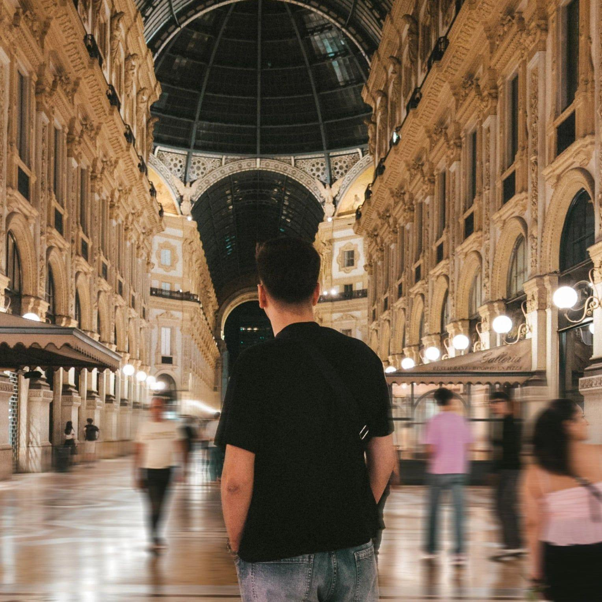

I'm Nahid Delić. I build robust backend systems and craft cinematic visual stories.
By day, I'm writing Go and designing SQL databases. The rest of the time, I'm directing, shooting, and color grading footage for my production studio.

A studio-grade desktop audio player and streaming studio for Google Drive & local storage. Features gapless playback, 10-band EQ, ambient UI, and cloud playlists.